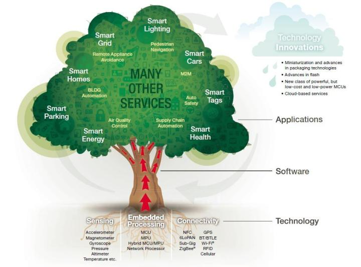
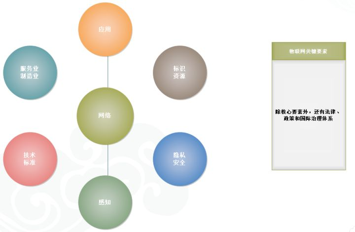
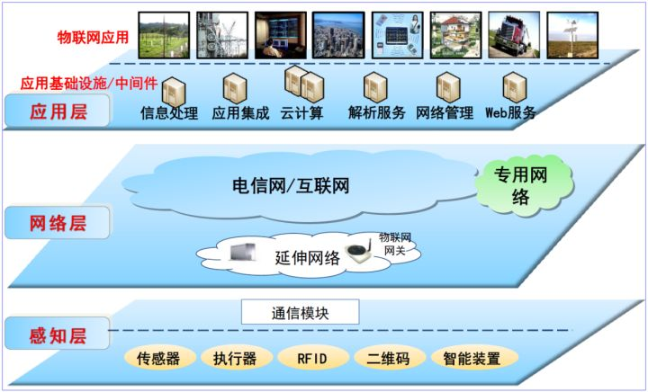
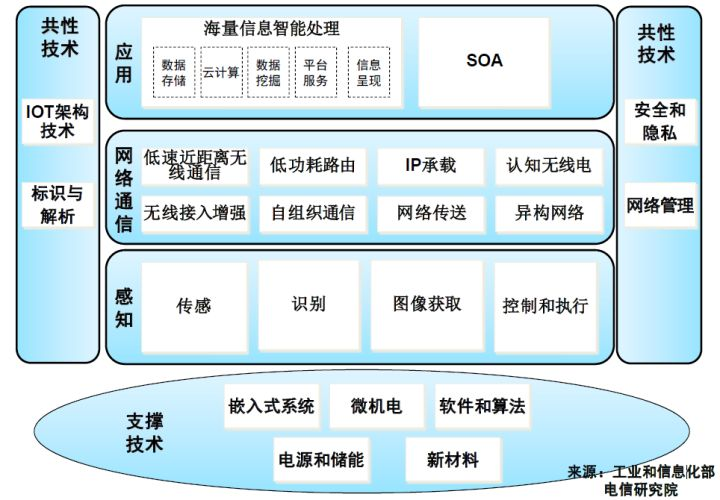
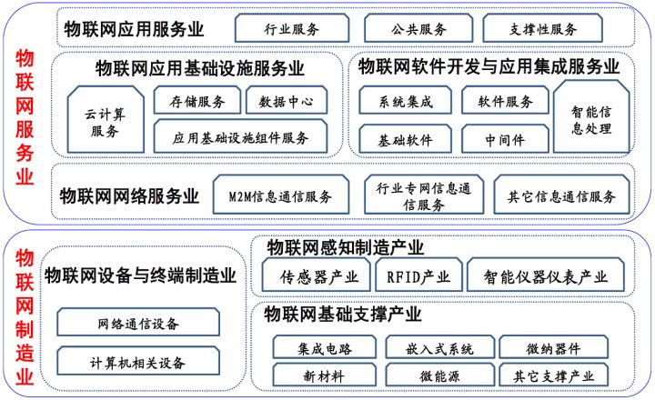
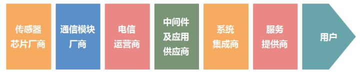
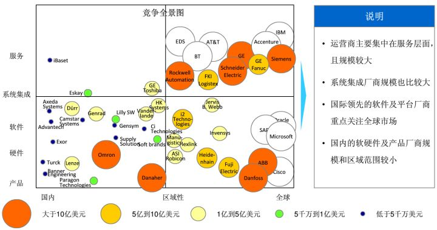
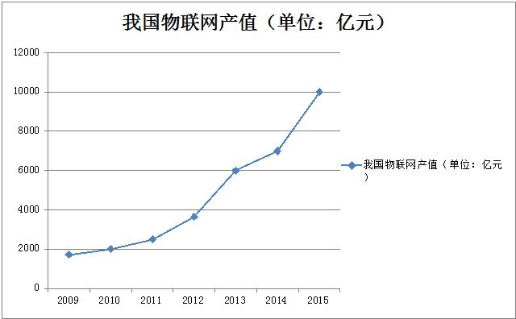
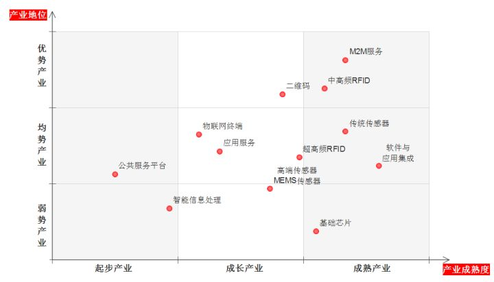

物联网应用的领域太广了，农业、交通、医疗、物流、工业、安防等等等等，如下图：
2.1 物联网概念
一、世界的物联网
物联网（Internet of Things，简称IOT）概念始终处于一个动态的、不断拓展的过程。
最初的物联网概念，国内外普遍公认的是MIT Auto-ID中心Ashton教授1999年在研究RFID时最早提出来的。当时叫传感网。其定义是：通过射频识别（RFID）、红外感应器、全球定位系统、激光扫描器等信息传感设备，按约定的协议，把任何物品与互联网相连接，进行信息交换和通信，以实现智能化识别、定位、跟踪、监控和管理的一种网络概念。
在2005年国际电信联盟（ITU）发布的同名报告中，物联网的定义和范围已经发生了变化，覆盖范围有了较大的拓展，不再只是指基于RFID技术的物联网，提出任何时刻、任何地点、任何物体之间的互联，无所不在的网络和无所不在计算的发展愿景，除RFID技术外、传感器技术、纳米技术、智能终端等技术将得到更加广泛的应用。
在国外，物联网概念往往以可视化的形式来深入人心，如图：

物联网体系可以形象地比喻成一棵树木，其由三部分构成：
最底层的是树根，即技术部分。由传感器技术&设备、嵌入式处理器技术&设备、连接技术&设备构成，是整个树木赖以生存和发展的根基。技术&设备的发展程度决定了树干和树冠的茂盛程度。
传感器技术&设备：压力传感器、温度传感器、湿度传感器等；
嵌入式处理技术&设备：微控制器MCU、微处理器MPU、网络处理器等；
连接技术&设备：NFC、Zigbee、GPS、WIFI等。
树根上面是树干，即软件部分。这是树木的躯干和中枢神经。包括设备驱动软件、服务器端软件和应用客户端软件。
树干上面是树冠。即应用部分。这是整个物联网体系的成果，可分为工业性应用和民用型应用两部分。
二、中国的物联网。
在我国，物联网的覆盖范围与时俱进，已经超越了1999年Ashton教授和2005年ITU报告所指的范围，物联网已被贴上“中国式”标签，其含义为：
物联网是将无处不在（Ubiquitous）的末端设备（Devices）和设施（Facilities），包括具备“内在智能”的传感器、移动终端、工业系统、楼控系统、家庭智能设施、视频监控系统等、和“外在使能”(Enabled)的，如贴上RFID的各种资产（Assets）、携带无线终端的个人与车辆等等“智能化物件或动物”或“智能尘埃”（Mote），通过各种无线和/或有线的长距离和/或短距离通讯网络实现互联互通（M2M)、应用大集成（Grand Integration)、以及基于云计算的SaaS营运等模式，在内网（Intranet）、专网（Extranet）、和/或互联网（Internet）环境下，采用适当的信息安全保障机制，提供安全可控乃至个性化的实时在线监测、定位追溯、报警联动、调度指挥、预案管理、远程控制、安全防范、远程维保、在线升级、统计报表、决策支持、领导桌面（集中展示的Cockpit Dashboard)等管理和服务功能，实现对“万物”的“高效、节能、安全、环保”的“管、控、营”一体化。
简单概括可为：把所有物品通过信息传感设备与互联网连接起来，进行信息交换，即物物相息，以实现智能化识别和管理。
2.2 物联网体系
一、物联网基本要素
物联网发展的关键要素包括由感知、网络和应用层组成的网络架构，物联网技术和标准，包括服务业和制造业在内的物联网相关产业，资源体系，隐私和安全以及促进和规范物联网发展的法律、政策和国际治理体系。

二、物联网网络架构
物联网网络架构由感知层、网络层和应用层组成。
感知层实现对物理世界的智能感知识别、信息采集处理和自动控制，并通过通信模块将物理实体连接到网络层和应用层。
网络层主要实现信息的传递、路由和控制，包括延伸网、接入网和核心网，网络层可依托公众电信网和互联网，也可以依托行业专用通信网络。
应用层包括应用基础设施/中间件和各种物联网应用。应用基础设施/中间件为物联网应用提供信息处理、计算等通用基础服务设施、能力及资源调用接口，以此为基础实现物联网在众多领域的各种应用。

三、物联网技术体系
物联网涉及感知、控制、网络通信、微电子、计算机、软件、嵌入式系统、微机电等技术领域，因此物联网涵盖的关键技术也非常多，为了系统分析物联网技术体系，特将物联网技术体系划分为感知关键技术、网络通信关键技术、应用关键技术、共性技术和支撑技术。

1. 感知、网络通信和应用关键技术。
传感和识别技术是物联网感知物理世界获取信息和实现物体控制的首要环节。传感器将物理世界中的物理量、化学量、生物量转化成可供处理的数字信号。识别技术实现对物联网中物体标识和位置信息的获取。
2. 网络通信关键技术。
网络通信技术主要实现物联网数据信息和控制信息的双向传递、路由和控制，重点包括低速近距离无线通信技术、低功耗路由、自组织通信、无线接入M2M 通信增强、IP 承载技术、网络传送技术、异构网络融合接入技术以及认知无线电技术。
3. 应用关键技术。
海量信息智能处理综合运用高性能计算、人工智能、数据库和模糊计算等技术，对收集的感知数据进行通用处理，重点涉及数据存储、并行计算、数据挖掘、平台服务、信息呈现等。面向服务的体系架构（Service-oriented Architecture ，SOA）是一种松耦合的软件组件技术，它将应用程序的不同功能模块化，并通过标准化的接口和调用方式联系起来，实现快速可重用的系统开发和部署。SOA 可提高物联网架构的扩展性，提升应用开发效率，充分整合和复用信息资源。
4. 支撑技术。
物联网支撑技术包括嵌入式系统、微机电系统（Micro ElectroMechanical Systems，MEMS）、软件和算法、电源和储能、新材料技术等。
5. 共性技术。
物联网共性技术涉及网络的不同层面，主要包括架构技术、标识和解析、安全和隐私、网络管理技术等。
四、物联网标准化体系
物联网标准是国际物联网技术竞争的制高点。由于物联网涉及不同专业技术领域、不同行业应用部门，物联网的标准既要涵盖面向不同应用的基础公共技术，也要涵盖满足行业特定需求的技术标准；既包括国家标准，也包括行业标准。
物联网标准体系相对庞杂，若从物联网总体、感知层、网络层、应用层、共性关键技术标准体系等五个层次可初步构建标准体系。
物联网总体性标准：包括物联网导则、物联网总体架构、物联网业务需求等。
感知层标准体系：主要涉及传感器等各类信息获取设备的电气和数据接口、感知数据模型、描述语言和数据结构的通用技术标准、RFID 标签和读写器接口和协议标准、特定行业和应用相关的感知层技术标准等。
网络层标准体系：主要涉及物联网网关、短距离无线通信、自组织网络、简化IPv6 协议、低功耗路由、增强的机器对机器（Machineto Machine，M2M）无线接入和核心网标准、M2M 模组与平台、网络资源虚拟化标准、异构融合的网络标准等。
应用层标准体系：包括应用层架构、信息智能处理技术、以及行业、公众应用类标准。应用层架构重点是面向对象的服务架构，包括SOA 体系架构、面向上层业务应用的流程管理、业务流程之间的通信协议、元数据标准以及SOA 安全架构标准。信息智能处理类技术标准包括云计算、数据存储、数据挖掘、海量智能信息处理和呈现等。云计算技术标准重点包括开放云计算接口、云计算开放式虚拟化架构（资源管理与控制）、云计算互操作、云计算安全架构等。
共性关键技术标准体系：包括标识和解析、服务质量（Quality ofService，QoS）、安全、网络管理技术标准。标识和解析标准体系包括编码、解析、认证、加密、隐私保护、管理，以及多标识互通标准。安全标准重点包括安全体系架构、安全协议、支持多种网络融合的认证和加密技术、用户和应用隐私保护、虚拟化和匿名化、面向服务的自适应安全技术标准等。
2.4 物联网产业
一、产业体系
物联网相关产业是指实现物联网功能所必需的相关产业集合，从产业结构上主要包括服务业和制造业两大范畴。

物联网制造业以感知端设备制造业为主。感知端设备的高智能化与嵌入式系统息息相关，设备的高精密化离不开集成电路、嵌入式系统、微纳器件、新材料、微能源等基础产业支撑。部分计算机设备、网络通信设备也是物联网制造业的组成部分。
物联网服务业主要包括物联网网络服务业、物联网应用基础设施服务业、物联网软件开发与应用集成服务业以及物联网应用服务业四大类，物联网应用基础设施服务主要包括云计算服务、存储服务等，物联网软件开发与集成服务又可细分为基础软件服务、中间件服务、应用软件服务、智能信息处理服务以及系统集成服务，物联网应用服务又可分为行业服务、公共服务和支撑性服务。
物联网产业绝大部分属于信息产业，但也涉及其它产业，如智能电表等。物联网产业的发展不是对已有信息产业的重新统计划分，而是通过应用带动形成新市场、新业态，整体上可分三种情形：
一是因物联网应用对已有产业的提升，主要体现在产品的升级换代。如传感器、RFID、仪器仪表发展已数十年，由于物联网应用使之向智能化网络化升级，从而实现产品功能、应用范围和市场规模的巨大扩展，传感器产业与RFID 产业成为物联网感知终端制造业的核心； 二是因物联网应用对已有产业的横向市场拓展，主要体现在领域延伸和量的扩张。如服务器、软件、嵌入式系统、云计算等由于物联网应用扩展了新的市场需求，形成了新的增长点。仪器仪表产业、嵌入式系统产业、云计算产业、软件与集成服务业，不独与物联网相关，也是其它产业的重要组成部分，物联网成为这些产业发展新的风向标；
三是由于物联网应用创造和衍生出的独特市场和服务，如传感器网络设备、M2M 通信设备及服务、物联网应用服务等均是物联网发展后才形成的新兴业态，为物联网所独有。物联网产业当前浮现的只是其初级形态，市场尚未大规模启动。
二、产业链条
梳理产业体系能够对物联网产业的内容有全局性了解，但想明确自身企业在产业链中的位置以及做相应战略规划，就必须知道整个物联网上下游产业链。
以我国为例，在物联网概念热炒之前，物联网产业链已经存在，主要以集成商为主角，但集成商又分布在各个行业、地域中。所以目前的物联网产业链基本可以理解为战国时代，同样的模式在不同的地域、行业被不同的集成商控制。

产业链上各部分的产业价值占比大约为：
（1）传感器/芯片厂商+通信模块提供商→15%；
（2）电信运营商提供的管道→15%；
（3）中间件及应用供应商+系统集成商+服务提供商→70%；
由此可见，在整个物联网产业价值链中，上游硬件厂商所占价值较小，绝大部分由中下游集成商/服务提供商分享，而这类占产业价值大头的公司通常都集多种角色为一体，以系统集成商的角色出现。电信运营商竭力在向两端延伸价值，但产业链的演变不是以运营商的意志为转移的，运营商可以在其中努力扩大产业链的自身价值，通过构建M2M平台和模块/终端标准化来逐步实现，但在实际的商业模式中，要让广大的集成商使用运营商标准的模块和平台，必须价值让利，通过模块的补贴、定制、集采逐步让集成商接纳运营商的标准，进而将行业应用数据流逐步迁移到运营商的平台上。
附：全球产业链各环节主要参与者产业定位和规模：

三、资源体系
物联网发展中的关键资源主要包括标识资源和频谱资源。
1. 标识。
目前，物联网物体标识方面标准众多，很不统一。但大致有条码表示、智能物体标识、RFID标识、通信标识这四种。
2. 频谱资源。
物联网的发展离不开无线通信技术，因此频谱资源作为无线通信的关键资源，同样是物联网发展的重要基础资源。目前在物联网感知层和网络层采用的无线技术包括RFID、近距离无线通信、无线局域网（IEEE 802.11）、蓝牙、蜂窝移动通信、宽带无线接入技术等。目前物联网应用大部分还在发展之中，物联网业务模型尚未完全确定，因此根据物联网业务模型和应用需求对频谱资源需求的分析、对多种无线技术体制“物联”带来的干扰问题分析、对频谱检测技术的研究、对提高空闲频谱频率利用率的方法研究、物联网频谱资源管理方式等方面将是物联网频谱资源研究的关键所在。
四、我国物联网产业概况
1. 产业保持较快增长，部分领域取得局部突破。
从2009年至今，我国物联网产业迅猛发展，从1700多亿元增长到6000多亿元，年复合增长率超过三成。同时物联网产业链不断健全，政策环境日趋完善、示范项目示范区建设取得较大成效，使我国物联网产业在量增的基础上实现了质的提升。

物联网制造业中，我国感知制造获得局部突破，与国外差距在逐步缩小。
（1）在光纤传感器在高温传感器和光纤光栅传感器方面获得了重大突破，在石油、钢铁、运输、国防等行业实现了批量应用，产品质量达到国际先进水平。
（2）在RFID 领域，我国中高频RFID 技术产品在安全防护、可靠性、数据处理能力等方面接近国际先进水平，产业链业已成熟，在国内市场占据90%的份额。我国已成功研发出自主的超高频产品并打进了国际市场。
（3）在工业物联网领域研制成功了面向工业过程自动化的工业无线通信芯片。
物联网服务业中，我国三大运营商的M2M服务一直是产业亮点。
中国移动和中国电信分别把物联网业务基地升级成为物联网分公司进行市场化经营。中国联通各类近场支付卡发卡量已经超过200 万张，基于WCDMA 网络的企业专网提供智能公交行车监控及调度系统，用户规模超过100 万，覆盖城市已超过200 个。
2. 产业体系相对完善，但不同产业环节所处阶段不同。
我国物联网产业体系已基本齐全，包括以感知端设备和网络设备为代表的物联网制造业，以网络服务、软件与集成服务、应用服务为代表的物联网服务业。

整体看来，我国在M2M 服务、中高频RFID、二维码等产业环节具有一定优势，在基础芯片设计、高端传感器制造、智能信息处理等产业环节依然薄弱；网络通信相关技术和产业支持能力与国外差距相对较小，传感器、低频RFID 等感知端制造产业、高端软件与集成服务与国外差距相对较大。仪器仪表、嵌入式系统、软件与集成服务等产业虽已有较大规模，但真正与物联网相关的设备和服务尚在起步。
从全球来看，物联网大数据处理和公共平台服务处于起步阶段，物联网相关的终端制造和应用服务仍在成长培育。
3. 我国物联网产业已形成四大发展集聚区的空间格局
已初步形成分别以北京、上海、深圳、重庆为核心的环渤海、长三角、珠三角、中西部地区四大物联网产业集聚区的空间格局，其中：
（1）环渤海区域以北京为核心，主要借助产学研资源和总部优势，成为我国物联网产业研发、设计、运营和公共服务平台的龙头区域；
（2）长三角区域以上海、无锡双核发展为带动，是我国物联网最早起步的区域，产业规模在国内也是最大的，整体发展比较均衡，尤其无锡市作为“国家传感网创新示范区”，集聚了大批物联网龙头企业，在技术研发与产业化、以及应用推广方面发挥了引领示范作用；
（3）珠三角区域以深圳为核心，延续其在传统电子信息领域的研发制造优势，成长为物联网产品制造、软件研发和系统集成的重要基地；
（4）中西部地区以重庆和武汉为代表，在软件、信息服务、传感器等领域发展迅猛，成为第四大产业基地。
4. 传统设备厂商借助物联网技术探索全新的产品服务模式。
与国际上传统产业与信息产业跨界融合的趋势相辉映，我国也出现设备制造业与物联网、互联网融合，创新产品和服务新模式的现象。家电行业借力物联网技术，已经率先开展拓展价值空间并改善产品服务的模式探索。这种创新模式，不仅涉足智能家居领域和家居设备，还将催生融合物联网元素的多种智能产品，如可穿戴设备、智能汽车设备、医疗健康设备、智能玩具等等。传统产业通过与物联网技术深度融合，同时利用互联网的平台服务以及移动互联网的商业模式，形成开放产业生态创新产品和服务的模式，将成为物联网产业发展的重要方向。